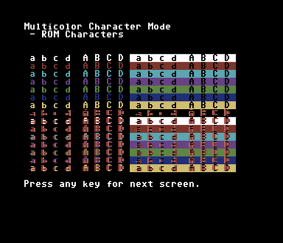
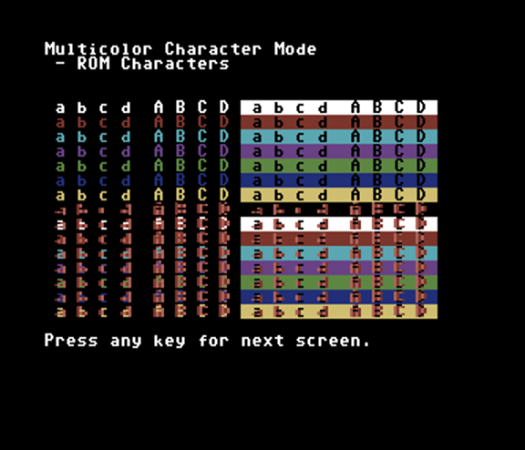

10 rem video modes - c64
15 rem rosetta code
20 print chr$(147);chr$(14):poke 53280,0:poke 53281,0:poke 646,1
25 poke 53282,2:poke 53283,10:poke 53284,6:rem set extended and multi colors
30 if peek(12288)=60 and peek(12289)=102 then goto 100
35 poke 52,32:poke 56,32:clr
40 print "Initializing - Please wait..."
45 poke 56334,peek(56334) and 254:poke1,peek(1) and 251
50 for i=0 to 4096:poke i+12288,peek(i+53248):next
55 poke1,peek(1) or 4:poke56334,peek(56334) or 1
60 for i=0 to 31:read d:poke 15368+i,d:next i
65 x=0:for i=8192 to 10239:poke i,2^x:x=(x+1) and 7:next
70 for i=10240 to 12287:poke i,228:next
100 data 60,66,165,129,165,153,66,60
105 data 60,66,165,129,153,165,66,60
110 data 245,245,245,245,10,10,10,10
115 data 10,10,10,10,245,245,245,245
480 print chr$(147);"Demonstration of Video Modes"
485 print
490 print "The video modes described at Rosetta "
495 print "Code will be demonstrated in order. "
500 print "Simply press a key to advance to the"
505 print "next video mode."
510 print
515 print "See rosettacode.org for description."
516 print
517 print "http://www.rosettacode.org/wiki/";
518 print "Video";chr$(164);"display";chr$(164);"modes#";
519 print "Commodore";chr$(164);"BASIC"
520 print
525 print "Press any key to begin."
530 gosub 9010
600 print chr$(147);"Standard Character Mode"
605 print " - ROM Characters"
610 print:gosub 1000:print:gosub 9000:print chr$(147)
615 gosub 1210
620 print chr$(147);"Multicolor Character Mode"
625 print " - ROM Characters"
630 print:gosub 1000:print:gosub 9000:print chr$(147)
635 gosub 1220
640 gosub 1310
645 print chr$(147);"Extended Color Character Mode"
650 print " - ROM Characters"
655 print:gosub 1000:print:gosub 9000:print chr$(147)
660 gosub 1320
665 gosub 1100
670 print chr$(147);"Standard Character Mode"
675 print " - Programmed Characters"
680 print:gosub 1000:print:gosub 9000:print chr$(147)
685 gosub 1210
690 print chr$(147);"Multicolor Character Mode"
695 print " - Programmed Characters"
700 print:gosub 1000:print:gosub 9000:print chr$(147)
705 gosub 1220
710 gosub 1310
715 print chr$(147);"Extended Color Character Mode"
720 print " - Programmed Characters"
725 print:gosub 1000:print:gosub 9000:print chr$(147)
730 gosub 1320
735 print chr$(147);"The next screen will be the"
740 print "High Resolution Bit Map Mode"
745 print
750 gosub 9000
755 gosub 1430:gosub 1410
760 print:gosub 1050:print:gosub 9010:print chr$(147)
765 gosub 1420:gosub 1120
770 print chr$(147);"The next screen will be the"
775 print "Multicolor High Resolution Bit Map Mode"
780 print
785 gosub 9000
790 gosub 1430:gosub 1410:gosub 1210
795 print:gosub 1050:print:gosub 9010:print chr$(147)
800 gosub 1420:gosub 1220:gosub 1120
805 print chr$(147);"End of demonstration."
810 end
1000 rem put some characters up for demo
1005 for i=0 to 15:poke 646,i
1010 print" a b c d ";
1011 print chr$(160);"A";chr$(160);"B";chr$(160);"C";chr$(160);"D";chr$(160);
1012 print chr$(18);" a b c d ";
1013 print chr$(160);"A";chr$(160);"B";chr$(160);"C";chr$(160);"D";chr$(160);
1014 print chr$(146)
1015 next i:poke 646,1
1020 return
1050 rem show color variety for hi-res modes
1051 print chr$(147)
1055 for i=0 to 255:poke 1024+i,i:poke55296+i,15-(i and 15):next i
1060 for i=0 to 255:poke 1280+i,i:poke 55552+i,int(rnd(1)*16):next i
1065 return
1100 rem programmable character mode
1110 poke 53272,(peek(53272) and 240)+14:return:rem on
1120 poke 53272,(peek(53272) and 240)+6:return:rem off
1200 rem multicolor mode
1210 poke 53270,peek(53270) or 16:return:rem on
1220 poke 53270,peek(53270) and 239:return:rem off
1300 rem extended color mode
1310 poke 53265,peek(53265) or 64:return:rem on
1320 poke 53265,peek(53265) and 191:return:rem off
1400 rem hi res mode
1410 poke 53265,(peek(53265) or 32):return:rem on
1420 poke 53265,(peek(53265) and 223):return:rem off
1430 poke 53272,peek(53272) or 8:return:rem place bitmap at 8192
9000 print "Press any key for next screen.";
9010 get k$:if k$="" then 9010
9020 return

 


The task was to programatically demonstrate all of the video modes available on whatever computer the program is running on. No high definition here... The Commodore 64 is limited to a 320x200 pixel resolution and a 16-color palette. There are also multi-color modes that allowed for a toal of four colors to be displayed within a single 8x8 block of pixels, but this decreases the horizontal resolution by half.
Here are the specifications of the video modes:
Standard Character Mode
Multicolor Character Mode
Extended Color Mode
Programmable Character Mode
Standard High Resolution Bit Mapped Mode
Multicolor Hi-res Bit Mapped Mode